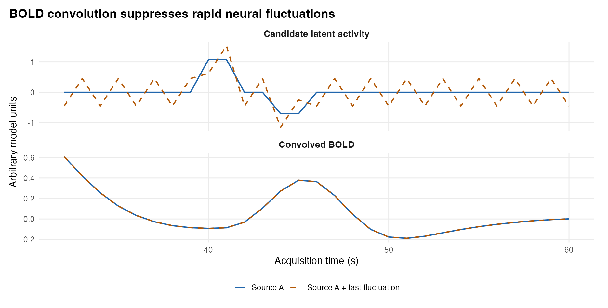
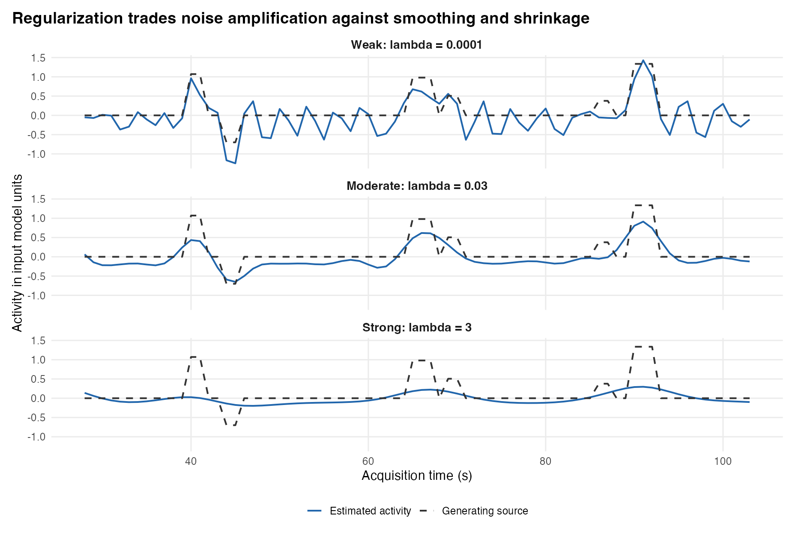
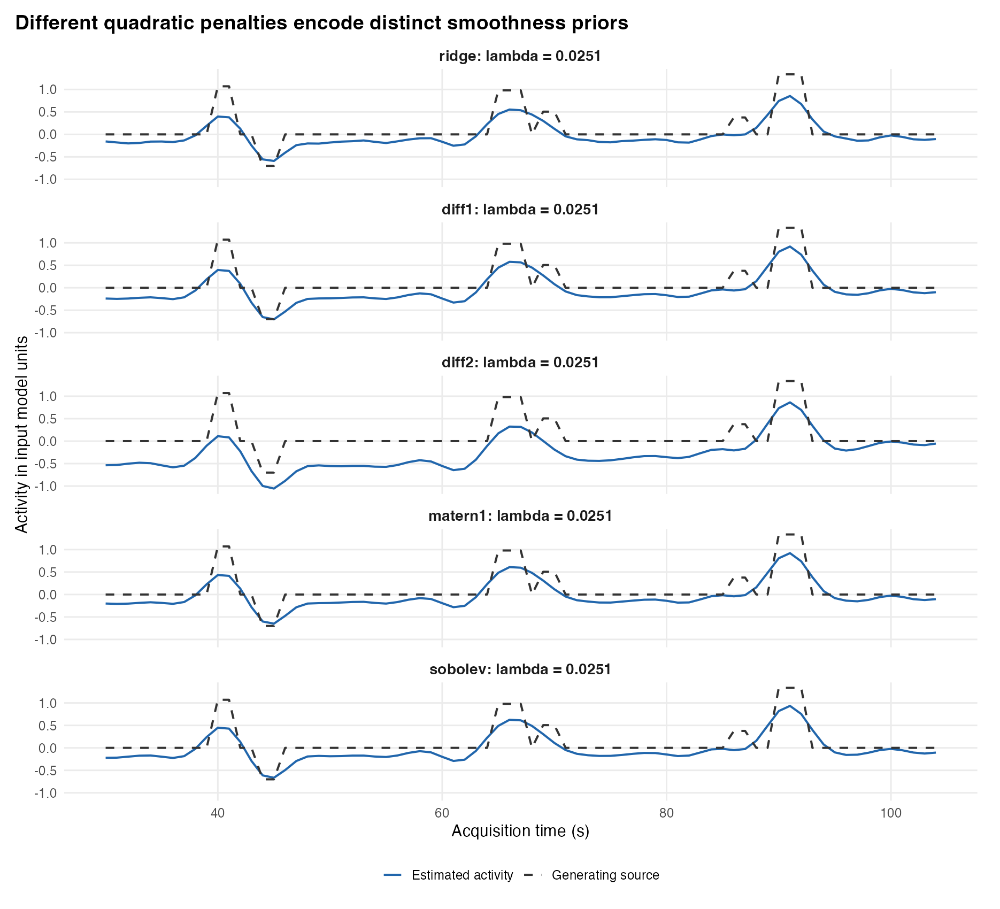
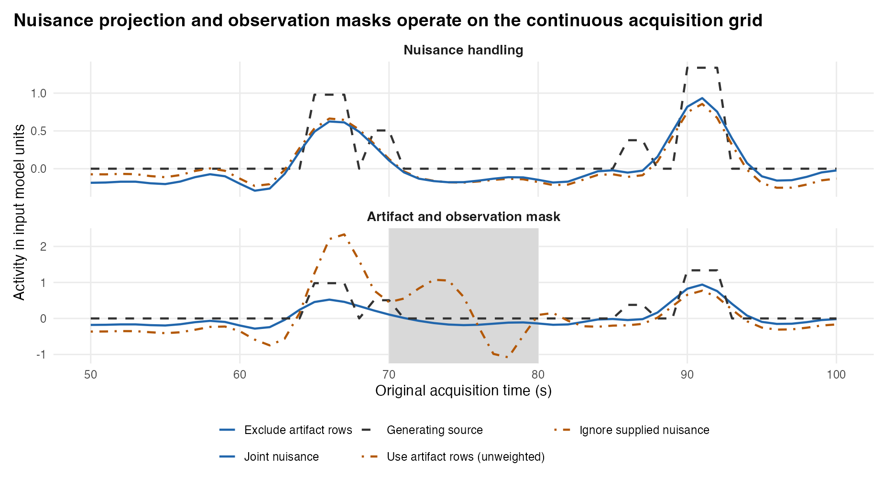
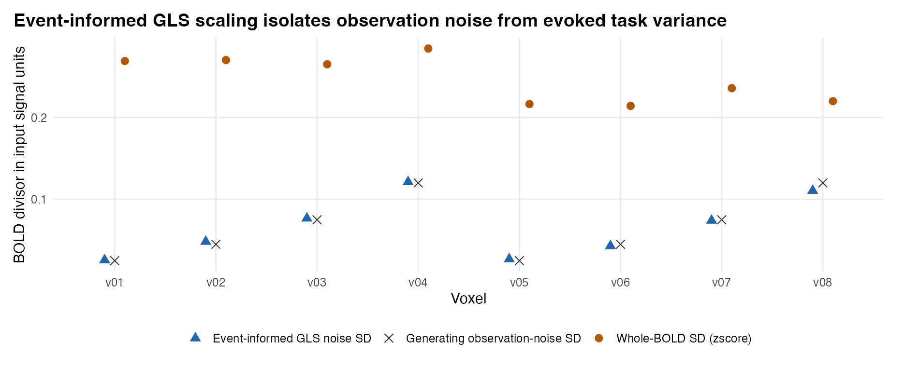
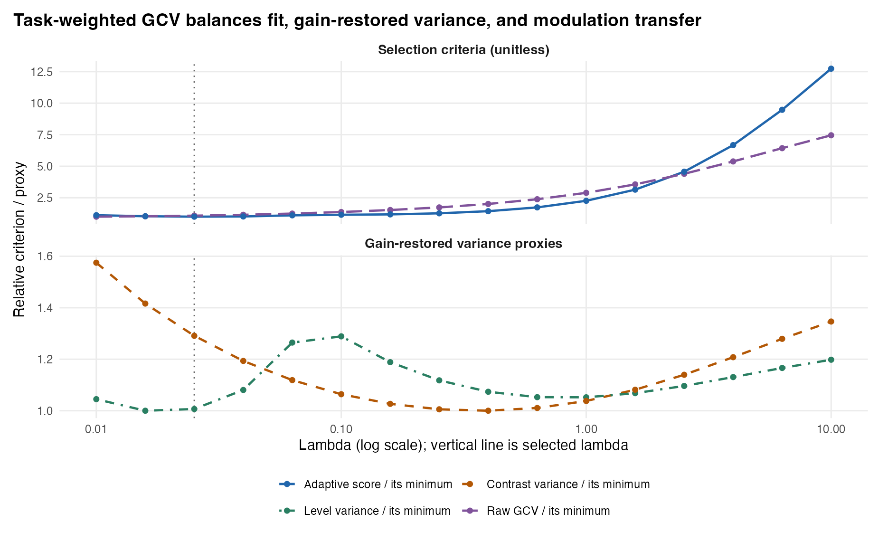
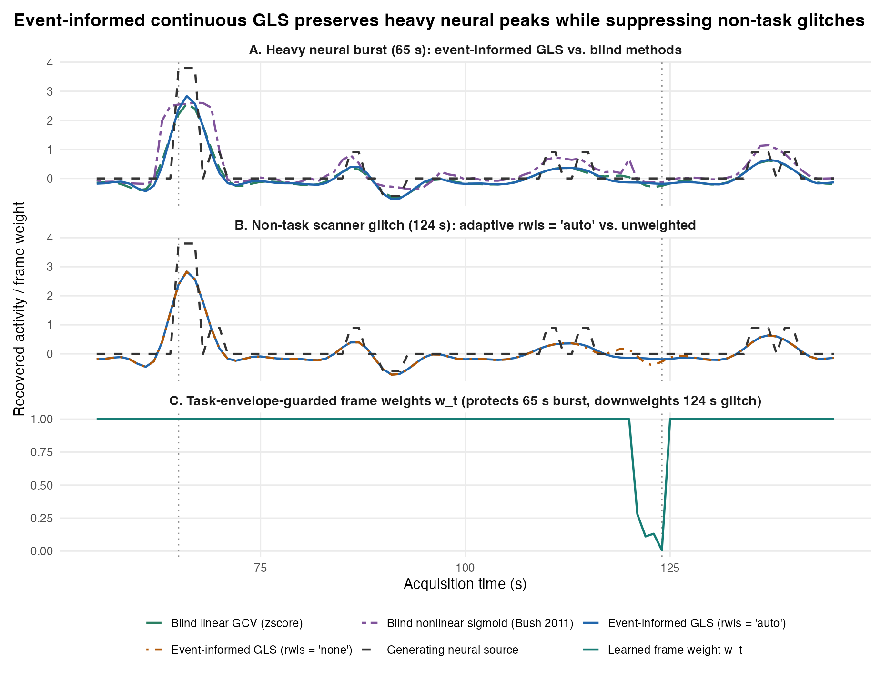
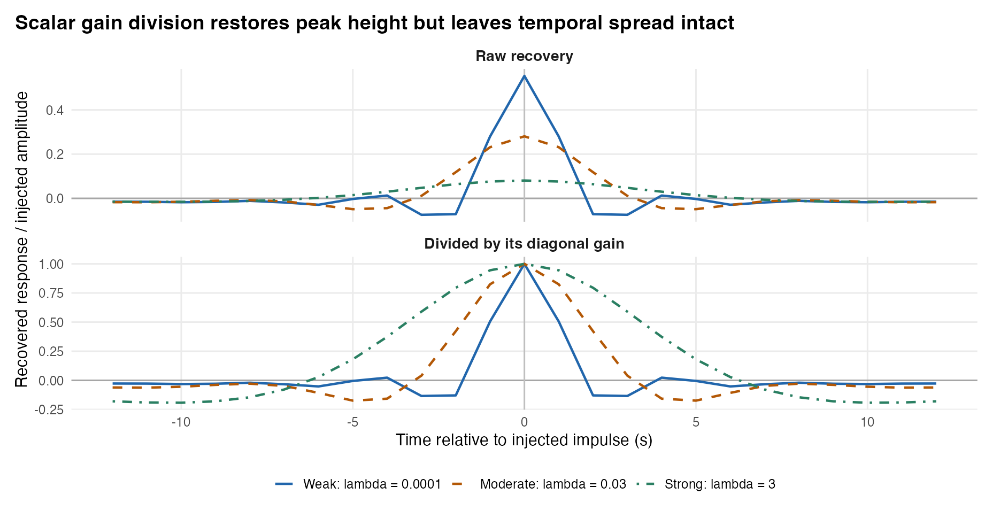
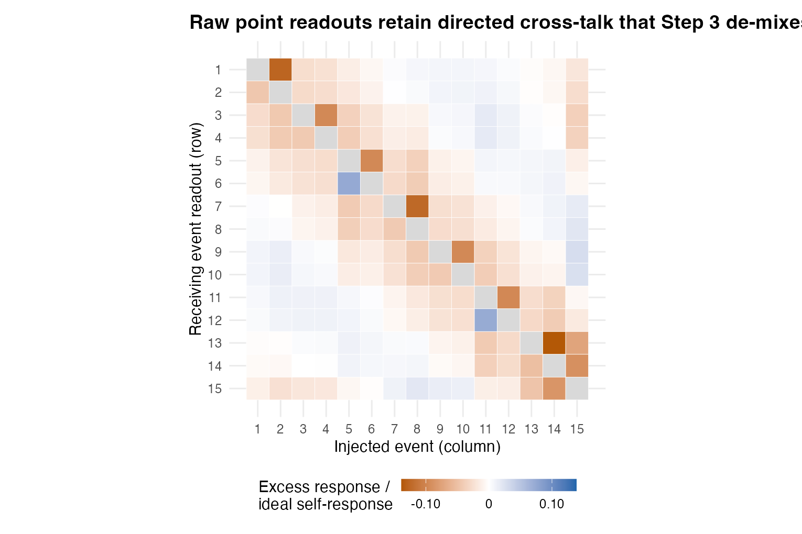
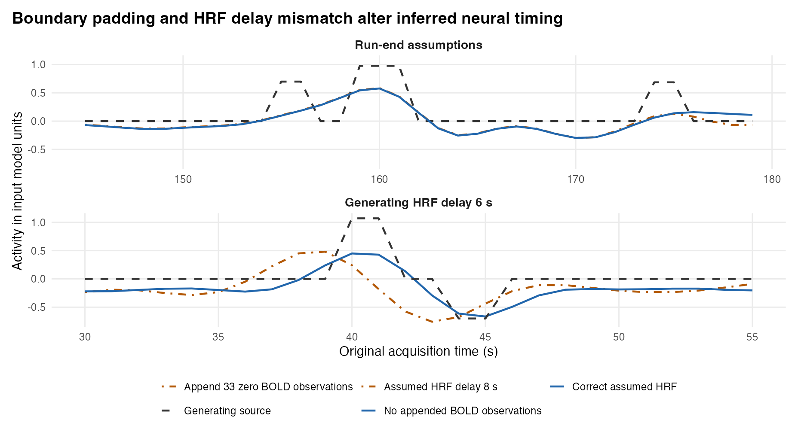

library(medusa)
decon <- deconvolve_crossrun_hrf(
bold = bold,
hrf_fit = hrf_fit,
scaling = "noise_sd",
penalty = "sobolev",
lambda_mode = "auto",
rwls = "auto",
nuisance_mode = "preproject",
noise_pcs = "auto"
)Step 2: Event-Informed Continuous Deconvolution
Reconstructing continuous latent neural activity via event-anchored GLS regularization
Overview
Given each run’s cross-fitted HRF and serial noise model from Step 1, Step 2 (deconvolve_crossrun_hrf()) reconstructs a continuous latent neural activity time series \(\widehat{a}_r(t)\) on the original acquisition grid for every run and voxel. Because hemodynamic convolution smooths rapid neural fluctuations over 15–30 seconds, Step 2 solves a smoothness-penalized, \(\text{AR}(p)\)-whitened generalized least squares (GLS) inverse problem that recovers continuous neural dynamics while controlling high-frequency noise amplification.
The defining feature of MEDuSA’s Step 2 is its event-informed continuous architecture: the latent time series \(\widehat{a}_r(t)\) itself is estimated continuously and unconstrained across the entire run, while an auxiliary event-informed GLS regression model calibrates the three quantities that govern inversion quality—(1) task-free observation-noise scaling (scaling = "noise_sd"), (2) neural-safe downweighting of transient scanner glitches (rwls = "auto"), and (3) SNR-stratified cross-run smoothing (lambda_mode = "auto").
NotePosition in the MEDuSA Pipeline
bold + Step 1 hrf_fit \(\longrightarrow\) Step 2 (deconvolve_crossrun_hrf) \(\longrightarrow\) decon S3 object (activity + operator metadata + scaling + noise_innovations + frame_weights) \(\longrightarrow\) Step 3 (decon_epoch_regression)
The five substeps below develop this estimator from the basic continuous GLS inverse (2.1), through observation-noise standardization (2.2), adaptive glitch weighting (2.3), and SNR-stratified smoothing (2.4), culminating in a direct comparison between event-informed continuous GLS and blind deconvolution (2.5).
Goals, Inputs, and Outputs
Goals of Step 2
- Recover continuous, unconstrained latent neural time courses: Estimate a
time × voxelactivity matrix \(\widehat{a}_r\) on the intact acquisition grid via prewhitened penalized GLS. - Standardize voxels and runs by pure observation noise: Estimate marginal observation-noise SD (\(\hat{\sigma}_{\text{marg}}\)) from task-projected GLS residuals (
scaling = "noise_sd") so strong task activation does not compress recovered amplitudes. - Downweight transient non-task glitches safely: Attenuate isolated sub-scrubbing motion or RF spikes (
rwls = "auto") while leaving genuine high-amplitude neural bursts unclipped. - Adapt regularization (
lambda) to regional task SNR: Tune smoothness automatically across runs while grouping voxels from quiet background cortex up to strong task foci so noisier regions receive stronger smoothing (lambda_mode = "auto"). - Carry exact linear operator metadata into Steps 3–6: Package
activitytogether withscaling, task-freenoise_innovations,frame_weights, and(HRF, AR, lambda)stratum keys so downstream steps de-mix overlapping epochs and propagate analytical standard errors.
Inputs: What Step 2 Receives and Why
| Input | Structure | Why It Is Set Up That Way |
|---|---|---|
bold |
Named list of time × voxel numeric matrices (or "medusa_nifti_ts" object) matching hrf_fit |
Aligns each run’s observations 1-to-1 with its cross-fitted HRFs, valid_rows masks, and \(\text{AR}(p)\) noise parameters from Step 1. |
hrf_fit |
"crossrun_hrf" S3 object from estimate_crossrun_hrf() |
Supplies out-of-sample selected_kernels, own-run noise cascades, out-of-sample task-SNR summaries (selections), events, nuisance, and valid_rows. |
scaling |
"noise_sd" (recommended), "zscore", "demean", "psc", or "none" |
Standardizes each run and voxel before applying the roughness penalty so a shared \(\lambda\) carries a consistent bias–variance meaning across units of differing gain. |
penalty |
"sobolev" (recommended), "diff2", "diff1", "matern1", or "ridge" |
Defines the symmetric positive semi-definite roughness matrix \(P\) governing how rapid fluctuations and baseline drift are penalized. |
lambda, lambda_mode, & lambda_grid |
NULL (auto-tuned), scalar, or length-\(V\) vector; lambda_mode = c("auto", "global", "stratified") |
Controls smoothing strength, tuned automatically across runs over lambda_grid = 10^seq(-2, 1, length.out = 16) either globally or across monotone task-SNR tiers. |
rwls, nuisance_mode, highpass, & noise_pcs |
rwls = "auto"; nuisance_mode = c("preproject", "ignore", "joint"); highpass = 128; noise_pcs = "auto" |
Govern transient glitch weighting (rwls), clock-aligned pre-orthogonalization of < 1/128 Hz DCT drift, nuisance confounds, and cross-validated background noise-pool PCs (noise_pcs = "auto") prior to \(|H(\omega)|^{-1}\) inversion, and exclusion of valid_rows == FALSE frames (observation_mask = "fit"). |
Outputs: What Step 2 Produces and Why It Is Set Up That Way
deconvolve_crossrun_hrf() returns an S3 "crossrun_decon" object designed to be passed intact into Step 3 (decon_epoch_regression()):
| Output Component | Structure | Why It Is Set Up That Way |
|---|---|---|
activity |
Named list of n_time × n_voxels matrices (with tr, time_offset, and observation_mask attributes) |
Retains the full acquisition grid—even across interior censored frames—so event timestamps and continuous diagnostics stay aligned to run seconds. |
scaling |
Named list of per-run data.frames (voxel, center, scale, noise_sd, lambda, status) |
Records the pre-deconvolution divisor (scale), marginal observation-noise SD (noise_sd), and per-voxel penalty (lambda), enabling Step 3 to restore physical BOLD units (restore_scale = TRUE) and propagate exact SEs. |
noise_innovations, bold_obs, & whitened_sketch |
Named lists of task-free whitened residuals and uncensored BOLD (\(\le 16{,}384\) voxels) or compact \(m_r \times 64\) subspace sketches (\(> 16{,}384\) voxels) | Captures spatial and dynamic error structure without retaining full 4D BOLD arrays in memory, enabling bold-free Adaptive-POET + covariance-regression shared-error estimation in Steps 3–6. |
frame_weights |
Named list of length-n_valid_rows vectors in \((0, 1]\) |
Preserves any adaptive rwls glitch weights so Step 3 reconstructs the exact weighted inverse operator and error covariance. |
hrf_fit, settings, voxel_map, & geometry |
Embedded crossrun_hrf + tuning tables (lambda_strata, lambda_tuning) + NIfTI metadata |
Allows Steps 3–4 to rebuild stratum operators \(D_r\) on the fly without storing gigabytes of dense \(T_r \times m_r\) matrices in memory, and supports direct NIfTI export via write_nifti_ts(). |
Step-by-Step Walkthrough: Substeps and Choice Points
2.1 Formulate the continuous prewhitened GLS deconvolution objective
Start with a single run \(r\) and voxel whose centered, standardized usable BOLD observations \(\tilde{y}_{r,o}\) follow the forward convolution model \(\tilde{y}_{r,o} = M_{r,o} H_r a_r + \varepsilon_{r,o}\), where \(H_r\) convolves latent neural activity \(a_r \in \mathbb{R}^{T_r}\) with Step 1’s HRF, \(M_{r,o}\) selects the \(m_r\) unmasked frames (valid_rows[[r]] == TRUE), and \(W_r\) whitens the \(\text{AR}(p)\) error covariance.
Because \(H_r\) acts as a low-pass filter, high-frequency oscillations in \(a_r\) leave convolved BOLD almost unchanged (Figure 5.1). Inverting \(H_r\) with virtually no penalty (lambda = 0.0001) therefore amplifies high-frequency noise dramatically, whereas an overly large penalty (lambda = 3) smooths away phasic peaks (Figure 5.2).


lambda (0.0001, 0.03, 3) on the same noisy BOLD series under the sobolev penalty.
Step 2 estimates \(\widehat{a}_r\) by minimizing the penalized prewhitened GLS objective across the full \(T_r\)-sample run grid: \[ \widehat{a}_r = \arg\min_{a \in \mathbb{R}^{T_r}} \left\| W_r \bigl(\tilde{y}_{r,o} - M_{r,o} H_r a\bigr) \right\|_2^2 + \lambda a^\top P a. \] Notice that no event timestamps appear inside \(P\) or restrict \(a\): spontaneous inter-trial fluctuations, sustained deliberation plateaus, and brief phasic bursts can occur anywhere on the acquisition clock, and the solution is a linear map \(\widehat{a}_r = D_r \tilde{y}_{r,o}\).

ridge, diff1, diff2, matern1, sobolev) on the same run.
Show supporting code
knitr::kable(d2$metrics, digits = 3, row.names = FALSE,
col.names = c("Penalty", "Selected Lambda", "Correlation w/ Truth", "Latent RMSE", "Convolved BOLD RMSE"))penalty_metrics.csv).
| Penalty | Selected Lambda | Correlation w/ Truth | Latent RMSE | Convolved BOLD RMSE |
|---|---|---|---|---|
| ridge | 0.025 | 0.828 | 0.261 | 0.136 |
| diff1 | 0.025 | 0.798 | 0.276 | 0.161 |
| diff2 | 0.025 | 0.595 | 0.390 | 0.320 |
| matern1 | 0.025 | 0.813 | 0.263 | 0.139 |
| sobolev | 0.025 | 0.808 | 0.264 | 0.140 |
Choice point — Roughness penalty (penalty) and nuisance projection (nuisance_mode):
- Penalty geometry:
penalty = "sobolev"combines a gentle first-difference slope penalty with a strong second-difference curvature penalty (\(0.10 D_1^\top D_1 + 0.90 D_2^\top D_2\), a discrete Sobolev norm) and is recommended as the standard choice. Pure second-difference curvature smoothing ("diff2") leaves global linear ramps unpenalized, whereas pure"ridge"shrinks each time point toward zero without sharing smoothness across neighboring TRs;"sobolev"(and"matern1") gently anchors baseline drift while keeping phasic transitions crisp (Figure 5.3, Table 5.1). - Clock-aligned drift, confound, and noise-pool pre-projection (
nuisance_mode = "preproject"&noise_pcs = "auto"): Because the Sobolev penalty vanishes on constant/ultra-slow modes while \(H(0) = 1\), leaving< 1/128 Hzscanner drift or motion confounds unprojected (nuisance_mode = "ignore"on raw BOLD) lets slow drift pass directly into \(\widehat{a}_r(t)\) even though Step 1’snoise_sdexcluded drift variance—inflating trial variance without matchingse_demixed. Conversely, projecting nuisance columns jointly inside \((A_r^\top A_r + P_\lambda)^{-1}\) (nuisance_mode = "joint") can amplify collinear slow neural modes.nuisance_mode = "preproject"(automatic default whenevernuisance,highpass = 128, ornoise_pcsare active) orthogonalizes[1, linear_trend, DCT(< 1/128 Hz), nuisance, noise_pcs]onvalid_rowsbefore continuous deconvolution and carries that exact projection into Step 3 (decon_epoch_regression()),diagnose_crossrun_recovery(), and Stage-3poet_covreg. Simultaneously,noise_pcs = "auto"projects out cross-validated background physiological PCs (Step 1 §1.5) before \(|H(\omega)|^{-1}\) amplifies0.15–0.30 Hzrespiratory and aliased cardiac harmonics. Use"ignore"only when BOLD and events were already matched-projected upstream.

bold (top) and bridging a masked valid_rows = FALSE artifact window 70–80 s under observation_mask = "fit" (bottom).
2.2 Standardize runs using event-informed marginal noise scaling
Before solving the penalized GLS objective across thousands of voxels, each run and voxel is centered and divided by a reference scale so \(\lambda\) acts comparably everywhere. A common convention in blind deconvolution is whole-run z-scoring (scaling = "zscore"), which divides by total temporal \(\text{SD}(y)\). However, in a strongly task-responsive voxel, \(\text{SD}(y)\) combines background noise and task-evoked BOLD variance—inflating the denominator and compressing recovered neural slopes relative to quieter voxels.
To separate observation noise from task signal without constraining \(\widehat{a}_r\), scaling = "noise_sd" fits an auxiliary event-informed GLS regression containing run drift, user nuisance columns, free per-trial convolved event regressors under Step 1’s HRF, and 1st/2nd HRF Taylor derivatives (absorbing trial-to-trial latency jitter). From the outlier-trimmed, leverage-adjusted residuals of this projection (Winsorized GLS residuals), MEDuSA extracts two quantities:
- Uncontaminated marginal observation-noise SD (\(\hat{\sigma}_{\text{marg}}\)): Tracks true background noise uniformly across high-gain, moderate-gain, and null voxels (Figure 5.5 and Table 5.2).
- Task-free whitened
noise_innovations: Orthonormalized residual series carried forward to measure pure spatial noise correlations in Steps 4 and 6.

zscore), event-informed GLS noise_sd, and true generating observation-noise SD across 8 voxels of varying task gain.
Show supporting code
knitr::kable(bve$scale_table, digits = 3, row.names = FALSE,
col.names = c("Voxel", "Task Regime", "True Noise SD", "Blind Whole-Run SD (zscore)", "Event-Informed GLS Noise SD"))| Voxel | Task Regime | True Noise SD | Blind Whole-Run SD (zscore) | Event-Informed GLS Noise SD |
|---|---|---|---|---|
| v01 | High task gain (1.0) | 0.035 | 0.415 | 0.032 |
| v02 | High task gain (1.0) | 0.035 | 0.415 | 0.031 |
| v03 | High task gain (1.0) | 0.035 | 0.416 | 0.034 |
| v04 | Moderate task gain (0.5) | 0.035 | 0.216 | 0.034 |
| v05 | Moderate task gain (0.5) | 0.035 | 0.215 | 0.034 |
| v06 | Moderate task gain (0.5) | 0.035 | 0.217 | 0.032 |
| v07 | Null voxel (0.0) | 0.035 | 0.052 | 0.033 |
| v08 | Null voxel (0.0) | 0.035 | 0.059 | 0.038 |
Choice point — Pre-deconvolution scaling (scaling): Specify scaling = "noise_sd" (and pair with restore_scale = TRUE in Step 3 when combining runs onto physical BOLD units). Reserve "zscore" or "demean" for sensitivity comparisons against legacy workflows.
2.3 Guard against transient scanner glitches without clipping neural bursts
Even after binary motion censoring (valid_rows), fMRI runs occasionally contain sub-threshold micro-movements or RF spikes (\(\text{FD} \approx 0.2\text{--}0.3\text{ mm}\)) that would cause oscillatory ringing in an unweighted linear inverse. At the same time, naive outlier downweighting risks mistaking an unusually large, genuine neural response (such as a surprise prediction-error burst) for an artifact.
Under rwls = "auto", Step 2 screens the most task-informative voxels across whole-brain maps (ranking selected_adjusted_partial_r2 up to 4,096 voxels with numerical QR/SVD fallbacks via hrf_safe_svd()), measures cross-voxel residual energy orthogonal to the modeled [trial HRF, dHRF/dt] task subspace, and widens frame tolerance in proportion to the convolved task envelope:
- On clean Gaussian runs, a whole-brain tail-energy test calibrated for spatially correlated voxels (via the Liu–Tang–Zhang, 2009 moment approximation) keeps all weights at \(w_t = 1\) so standard unweighted GLS is preserved exactly.
- When genuine non-task glitches occur, isolated 1–2 TR spikes are absorbed by adding transient observation-noise variance at only those flagged volumes (\(\Sigma_{\text{AR}} + \operatorname{diag}(\delta^2)\), solved via low-rank Woodbury Sparse Bayesian Learning updates so high-\(\rho\) AR filters do not smear a single-volume spike into neighboring frames), while multi-TR physiological bursts receive smooth innovation-space downweighting—all while keeping \(w_t = 1\) across heavy task-evoked neural bursts.
Choice point — Glitch downweighting (rwls): Leave rwls = "auto" enabled for empirical data; set rwls = "none" only when testing exact unweighted operator identities in synthetic benchmarks.
2.4 Tune smoothing strength (lambda) across task-SNR strata
Choosing \(\lambda\) by ordinary observation-space out-of-sample prediction error—approximated via generalized cross-validation (GCV)—targets BOLD curve fitting rather than downstream trial estimation, and averaging GCV across thousands of task-silent voxels pulls a single global penalty toward oversmoothing.
When lambda = NULL, Step 2 pools prewhitened GCV across usable runs alongside Stage-3 gain-restored trial level/contrast variance and modulation transfer weighted by Step 1’s out-of-sample task SNR (Figure 5.6). Furthermore, on volumetric maps where focal task regions coexist with quiet background cortex, lambda_mode = "auto" stratifies voxels by out-of-sample task SNR and enforces that smoothing never increases as task signal strengthens:
- Cross-run false-discovery gate: Combines Step 1 per-run task \(p\)-values across runs (Fisher combination + Benjamini–Hochberg FDR); if no voxels pass \(q \le 0.10\) (e.g., pure-null maps),
"auto"collapses safely to one global penalty. - Monotone task-SNR tiers: When focal signal is present, voxels are grouped into a quiet background tier (\(q > 0.20\), graph-stabilized \(R^2 < 0.025\)) and ascending active task-\(R^2\) quantiles (
max_lambda_strata = 4L), enforcing \(\lambda_{\text{quiet}} \ge \lambda_{\text{low-SNR}} \ge \dots \ge \lambda_{\text{high-SNR}}\) via a monotone ordering constraint (weighted pool-adjacent-violators, PAVA; see Spatial Graph Pooling).

Choice point — Smoothing mode (lambda & lambda_mode): Keep lambda = NULL and lambda_mode = "auto" as the standard choice. Use lambda_mode = "global" (or a fixed scalar lambda) only when holding an identical roughness penalty constant across every voxel in a comparison.
2.5 Why event-informed calibration improves over blind deconvolution
Stepping back across Substeps 2.1–2.4 clarifies how MEDuSA relates to both blind deconvolution (deconvolve_nlreg() / Bush & Cisler, 2013; deconvolve_reglin()) and standard task GLMs:
| Method Family | HRF & Noise Model | Scaling Reference | Glitch vs. Burst Handling | Latent Output & Downstream SEs |
|---|---|---|---|---|
Blind Nonlinear (deconvolve_nlreg / Bush & Cisler, 2013) |
Fixed canonical HRF; unwhitened OLS | Whole-run zscore (mixes task variance into divisor) |
Logistic sigmoid squashes all excursions into \((0,1)\) | Bounded nonlinear encoding; no linear operator or analytical trial SEs |
Blind Linear (deconvolve_reglin) |
Fixed HRF; optional scalar AR(1) | Whole-run zscore or raw \(\Delta^2\) |
Unweighted (glitches ring) or GCV oversmoothed by null voxels | Continuous linear series without cross-run HRF, task-free innovations, or epoch de-mixing |
| Standard Parametric GLM / LSS | Assumed HRF/basis; fixed event boxcars | Residual error | Fixed trial basis; zero neural activity assumed outside events | Scalar trial betas only; no continuous lag-flexible trajectory |
MEDuSA Event-Informed Continuous GLS (deconvolve_crossrun_hrf) |
Cross-fitted 3D HRF + 2-pass REML \(\text{AR}(p)\) | Event-projected GLS marginal noise_sd |
rwls = "auto" downweights non-task glitches while protecting neural bursts |
Unconstrained continuous \(\widehat{a}_r(t)\) plus exact operator \(D_r\), noise_innovations, and propagated trial covariance |
Figure 5.7 and Table 5.3 demonstrate all of these differences on identical simulated BOLD containing a genuine heavy neural burst at \(65\text{ s}\) (3.8 units) and an isolated non-task scanner glitch at \(124\text{ s}\) (+0.55 BOLD units): event-informed continuous GLS preserves burst height (0.746 vs. 0.676 blind linear) and waveform correlation (0.835 vs. 0.699 Bush nonlinear) while keeping frame weight \(w_t = 1.00\) on the \(65\text{ s}\) burst and cutting \(124\text{ s}\) glitch ringing in half (0.200 vs. 0.391 unweighted).

v01): (A) recovery around a heavy \(65\text{ s}\) neural burst across event-informed GLS vs. blind linear and nonlinear deconvolution; (B) suppression of inverse ringing around an isolated \(124\text{ s}\) non-task scanner glitch by rwls = "auto"; (C) learned task-envelope-guarded frame weights \(w_t\).
Show supporting code
knitr::kable(bve$summary_metrics, digits = 3, row.names = FALSE,
col.names = c("Deconvolution Method", "Correlation w/ Truth", "Physical RMSE", "Burst Peak Ratio (65 s)", "Max Glitch Ringing (124 s)"))blind_vs_event_metrics.csv).
| Deconvolution Method | Correlation w/ Truth | Physical RMSE | Burst Peak Ratio (65 s) | Max Glitch Ringing (124 s) |
|---|---|---|---|---|
| Event-informed GLS (rwls = ‘auto’) | 0.835 | 0.354 | 0.746 | 0.200 |
| Event-informed GLS (rwls = ‘none’) | 0.830 | 0.358 | 0.745 | 0.391 |
| Blind linear GCV (zscore) | 0.810 | 0.375 | 0.676 | 0.298 |
| Blind nonlinear sigmoid (Bush 2011) | 0.699 | 0.458 | 0.687 | 0.659 |
Recommended Settings
decon <- deconvolve_crossrun_hrf(
bold = bold,
hrf_fit = hrf_fit,
lambda = NULL,
lambda_mode = "auto",
scaling = "noise_sd",
penalty = "sobolev",
rwls = "auto",
nuisance_mode = "preproject", # pre-projects < 1/128 Hz DCT drift, nuisance, & noise_pcs
noise_pcs = "auto", # cross-validated background physiological PCs (0..10)
observation_mask = "fit",
tail_padding = 0L
)
# Inspect conditional gain and event cross-talk under your study's schedule:
recovery <- diagnose_crossrun_recovery(decon, lags = 0)
# Optional: stream 4D deconvolved activity or 3D log10(lambda) maps to NIfTI
# write_nifti_ts(decon$activity, c("run1_decon.nii.gz", "run2_decon.nii.gz"), reference = ts)| Argument | Recommended | Package Default | Summary of Role & When to Adjust |
|---|---|---|---|
scaling |
"noise_sd" |
"zscore" |
Divides by event-projected marginal observation-noise SD (Substep 2.2) rather than task-contaminated whole-run SD; pair with restore_scale = TRUE in Step 3. |
penalty |
"sobolev" |
"diff2" |
Penalizes both curvature and slow linear ramps (Substep 2.1) for stable baselines and clean event transitions. |
lambda & lambda_mode |
NULL, "auto" |
NULL, "auto" |
Tunes cross-run smoothness via prewhitened GCV (incorporating noise_pcs) and orders smoothing monotonically from quiet cortex down to high-SNR foci (PAVA; Substep 2.4). Use "global" when enforcing one scalar penalty across all voxels. |
rwls |
"auto" |
"auto" |
Stays inactive (\(w_t = 1\)) on clean runs and downweights non-task glitches across top selected_adjusted_partial_r2 voxels while protecting task-aligned bursts (Substep 2.3). |
nuisance_mode & highpass |
"preproject" & 128 |
"preproject" (when nuisance / highpass active) |
Pre-orthogonalizes [1, trend, DCT(< 1/128 Hz), nuisance, noise_pcs] on valid_rows prior to continuous GLS (Substep 2.1); use "ignore" only on already matched-detrended inputs. |
noise_pcs |
"auto" |
"auto" |
Suppresses narrowband aliased cardiac/respiratory and global vascular PCs from task-silent background cortex prior to \(|H(\omega)|^{-1}\) amplification (Substep 2.1). |
observation_mask & tail_padding |
"fit" & 0L |
"fit" & 0L |
Excludes masked valid_rows == FALSE frames from the data term without shifting the clock, and avoids appending artificial post-run zeros (see below). |
Practical Considerations: Operator Resolution, Boundaries, and Handoff to Step 3
- Why continuous
activityhas finite resolution—and why Step 3 handles de-mixing: Under any positive \(\lambda > 0\), the continuous resolution matrix \(R_r = D_r M_{r,o} H_r\) attenuates isolated impulse height (\(R_{tt} < 1\)) and spreads energy smoothly across neighboring TRs and closely spaced events (Figure 5.8, Figure 5.9). Simply dividing \(\widehat{a}_r\) pointwise by \(R_{tt}\) would amplify side-lobe noise everywhere (Figure 5.8, bottom). Instead,diagnose_crossrun_recovery(decon)audits self-gain and neighbor cross-talk on your event schedule, and passing the fulldeconobject to Step 3 (decon_epoch_regression()) performs matrix de-mixing and gain restoration specifically at the trial epochs of interest. - Bridging censored gaps (
observation_mask = "fit"): Across masked frames (70–80 sin Figure 5.4, bottom), the smoothness penalty interpolates cleanly from surrounding unmasked BOLD without letting artifacts corrupt adjacent trials; Step 3 will automatically check causal BOLD support (obs_frac_tau >= 0.20) so deeply masked events are flagged asNArather than treated as observed data. - Run-end boundaries (
tail_padding = 0L) and HRF timing (Figure 5.10): Appending synthetic zero BOLD frames after the end of a run (tail_padding > 0) pulls genuine late-run activity downward, while a 2-second HRF delay misspecification shifts recovered peaks in the opposite direction—confirming the value oftail_padding = 0Land Step 1’s cross-run HRF estimation. For side-by-side visual diagnostics of over-smoothing gain collapse and uncensored motion-spike ringing, see the Visual QC and Troubleshooting Gallery.


diagnose_crossrun_recovery() across 15 Run 1 events.

tail_padding = 33L vs. 0L, top) and a 2-second HRF delay misspecification (bottom).
Mathematical Reference & Reproduction
Let \(I_r \subset \{1, \dots, T_r\}\) index the \(m_r\) valid frames (valid_rows[[r]] == TRUE), \(M_{r,o}\) select rows \(I_r\), \(H_r \in \mathbb{R}^{T_r \times T_r}\) be the causal Toeplitz HRF convolution matrix for stratum kernel \(h\), and \(Z_{r,o}\) be the active nuisance basis ([1, trend, nuisance] under nuisance_mode = "joint", empty under "ignore").
- Exact gapped whitening & Woodbury SBL: \(W_r = L_r^{-1}\) is the inverse Cholesky factor of the stationary \(\text{AR}(p)\) correlation submatrix \(\Sigma_{\text{AR}}[I_r, I_r]\). Under
rwls_space = "woodbury"with transient variances \(\delta_t^2 = (1 - w_t)/w_t\) on flagged frames \(S\), MEDuSA whitens against \(\Sigma_{\text{AR}}[I_r, I_r] + \operatorname{diag}(\delta^2)\) via a rank-\(|S|\) Sherman–Morrison–Woodbury update in \(O(m_r |S|)\) operations. Orthogonalizing \(Q_Z = \operatorname{orth}(W_r Z_{r,o})\) projects out nuisance terms jointly via \(\tilde{W}_r = (I - Q_Z Q_Z^\top) W_r\). - Linear inverse operator: With \(A_r = \tilde{W}_r M_{r,o} H_r\) and penalty \(P_{\lambda} = \lambda P + \epsilon_{\text{ridge}} I_{T_r}\), the frozen inverse operator is \[
D_r = \bigl(A_r^\top A_r + P_{\lambda}\bigr)^{-1} A_r^\top \tilde{W}_r \in \mathbb{R}^{T_r \times m_r},
\] evaluated across voxel batches via Cholesky solves in C++ (
backend = "cpp", agreeing withbackend = "r"to 2.71e-14), withrestore_scalereproducingdemeanunits to 3.11e-15. Internal R helpers implementing Substeps 2.2–2.4 inR/crossrun_hrf.Rarehrf_estimate_gls_noise_sd(),hrf_estimate_rwls_weights(),hrf_tune_decon_lambda(),hrf_tune_decon_lambda_stratified(), andhrf_pava_nonincreasing().
Step 2 simulation script · Figure script · Verification output